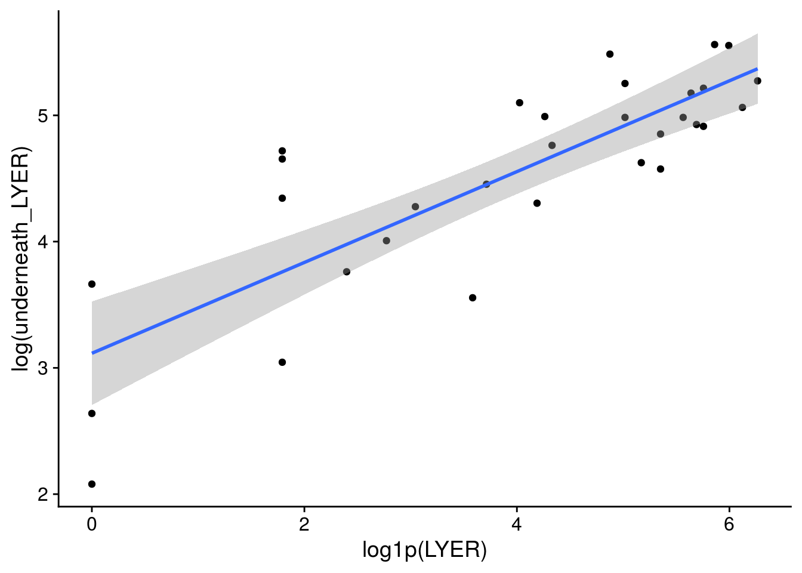

prep-timeseries
mabarbour
2021-05-19
Last updated: 2021-06-24
Checks: 6 1
Knit directory: genes-to-foodweb-stability/
This reproducible R Markdown analysis was created with workflowr (version 1.6.2). The Checks tab describes the reproducibility checks that were applied when the results were created. The Past versions tab lists the development history.
The R Markdown is untracked by Git. To know which version of the R Markdown file created these results, you’ll want to first commit it to the Git repo. If you’re still working on the analysis, you can ignore this warning. When you’re finished, you can run wflow_publish to commit the R Markdown file and build the HTML.
Great job! The global environment was empty. Objects defined in the global environment can affect the analysis in your R Markdown file in unknown ways. For reproduciblity it’s best to always run the code in an empty environment.
The command set.seed(20200205) was run prior to running the code in the R Markdown file. Setting a seed ensures that any results that rely on randomness, e.g. subsampling or permutations, are reproducible.
Great job! Recording the operating system, R version, and package versions is critical for reproducibility.
Nice! There were no cached chunks for this analysis, so you can be confident that you successfully produced the results during this run.
Great job! Using relative paths to the files within your workflowr project makes it easier to run your code on other machines.
Great! You are using Git for version control. Tracking code development and connecting the code version to the results is critical for reproducibility.
The results in this page were generated with repository version 1955523. See the Past versions tab to see a history of the changes made to the R Markdown and HTML files.
Note that you need to be careful to ensure that all relevant files for the analysis have been committed to Git prior to generating the results (you can use wflow_publish or wflow_git_commit). workflowr only checks the R Markdown file, but you know if there are other scripts or data files that it depends on. Below is the status of the Git repository when the results were generated:
Ignored files:
Ignored: .Rhistory
Ignored: .Rproj.user/
Ignored: code/.Rhistory
Ignored: output/.Rapp.history
Untracked files:
Untracked: .genes-to-foodweb-stability.Rproj.swp
Untracked: analysis/foodweb-persistence.Rmd
Untracked: analysis/foodweb-transitions.Rmd
Untracked: analysis/plant-growth-no-insects-lme.Rmd
Untracked: analysis/prep-timeseries.Rmd
Untracked: analysis/structural-stability.Rmd
Untracked: code/summarize_stability_metrics.R
Untracked: data/InsectAbundanceSurvival.csv
Untracked: data/insect_abundance_data_2018-09-26_underneathleaf.csv
Untracked: figures/MAR1-parameter-plot.pdf
Untracked: figures/aop2-genos-coxadjcurve.pdf
Untracked: figures/aop2-genotypes-multistate.pdf
Untracked: figures/cage-dynamics-20C.pdf
Untracked: figures/cage-dynamics-23C.pdf
Untracked: figures/keystone-coxadjcurve.pdf
Untracked: figures/keystone-effect-model-comparison-ratio.pdf
Untracked: output/all.mar1.brm.adj.rds
Untracked: output/all.mar1.brm.unadj.ar2.lag.rds
Untracked: output/all.mar1.brm.unadj.noBRBRonLYER.rds
Untracked: output/all.mar1.brm.unadj.rds
Untracked: output/all.mar1.brm.unadj.xAOP2.rds
Untracked: output/initial.mar1.brm.adj.rds
Untracked: output/initial.mar1.brm.unadj.rds
Untracked: output/time-series-data.RData
Unstaged changes:
Modified: README.md
Deleted: analysis/about.Rmd
Deleted: analysis/community-persistence-keystone.Rmd
Deleted: analysis/critical-transitions-keystone.Rmd
Modified: analysis/index.Rmd
Deleted: analysis/plant-growth-no-insects.Rmd
Deleted: analysis/structural-stability-keystone.Rmd
Deleted: code/AOP2-LYER-Ptoid-persistence.R
Modified: code/README.md
Deleted: code/glm-ftest.R
Modified: code/plot-feasibility-domain.R
Deleted: code/prep-time-series.R
Modified: code/simulate-community-dynamics.R
Deleted: code/temperature-structural-stability-fig.R
Modified: data/README.md
Deleted: data/arabidopsis_clean_df.csv
Modified: figures/AOP2-growth-no-insects.pdf
Modified: figures/MAR1-nonequilibrium-foodchain-AOP2.pdf
Deleted: figures/MAR1-nonequilibrium-initial-temp.pdf
Modified: figures/MAR1-posterior-foodchain-AOP2.pdf
Deleted: figures/MAR1-posterior-initial-temp.pdf
Deleted: figures/initial-foodweb-structural-stability.png
Modified: figures/keystone-gene.pdf
Modified: figures/keystone-structural-stability-forkeynote.pdf
Modified: output/README.md
Deleted: output/full.mv.norm.brm.keystone.rds
Deleted: output/plant-growth-no-insects.RData
Deleted: output/reduced.1.brm.keystone.rds
Deleted: output/reduced.2.brm.keystone.rds
Deleted: output/reduced.3.brm.keystone.rds
Deleted: output/reduced.4.brm.keystone.rds
Deleted: output/reduced.5.brm.keystone.rds
Deleted: output/reduced.6.brm.keystone.rds
Deleted: output/timeseries_df.csv
Note that any generated files, e.g. HTML, png, CSS, etc., are not included in this status report because it is ok for generated content to have uncommitted changes.
There are no past versions. Publish this analysis with wflow_publish() to start tracking its development.
Upload original data
original_df <- read_csv("data/InsectAbundanceSurvival.csv")Underneath leaves correction for LYER and Ptoid
We are only using data from the last week of the experiment, for which we have estimates of LYER and Ptoids (mummies actually) underneath the leaf
# only retain cages where LYER or Parasitoids survived
# no surviving BRBR, so we can't estimate this
LYER_df_17 <- filter(original_df, Week == "17") %>% filter(LYER_Survival == 1) %>% dplyr::select(Cage, LYER)
Mummy_df_17 <- filter(original_df, Week == "17") %>% filter(Mummy_Ptoids_Survival == 1) %>% dplyr::select(Cage, Mummy_raw)
# underneath leaf counts, only available for last week of experiment
underneath_df <- read_csv("data/insect_abundance_data_2018-09-26_underneathleaf.csv") # counted to individual resolution
# merge with original data
LYER_df_17 <- left_join(LYER_df_17, dplyr::select(underneath_df, Cage, underneath_LYER = LYER))
Mummy_df_17 <- left_join(Mummy_df_17, dplyr::select(underneath_df, Cage, underneath_Mummy = Mummy))LYER
## exploratory plots ----
# all data
x11(); ggplot(LYER_df_17, aes(x = log1p(LYER), y = log(underneath_LYER))) +
geom_point() + geom_smooth(method = "lm")
# remove outlier
x11(); ggplot(LYER_df_17[-31,], aes(x = log1p(LYER), y = log(underneath_LYER))) +
geom_point() + geom_smooth(method = "lm")
## GLM ----
# I dropped the outlier because I truly think it was an unusual data point and would bias our other estimates.
plot(MASS::glm.nb(underneath_LYER ~ log1p(LYER), LYER_df_17), which = 5)
summary(glm(underneath_LYER ~ log1p(LYER), LYER_df_17[-31,], family = poisson)) # residual deviance suggests a lot of overdispersion, so I'm going to use a negative binomial model
Call:
glm(formula = underneath_LYER ~ log1p(LYER), family = poisson,
data = LYER_df_17[-31, ])
Deviance Residuals:
Min 1Q Median 3Q Max
-6.9703 -3.1734 -0.9052 2.8304 7.9681
Coefficients:
Estimate Std. Error z value Pr(>|z|)
(Intercept) 3.47991 0.05716 60.88 <2e-16 ***
log1p(LYER) 0.29613 0.01141 25.95 <2e-16 ***
---
Signif. codes: 0 '***' 0.001 '**' 0.01 '*' 0.05 '.' 0.1 ' ' 1
(Dispersion parameter for poisson family taken to be 1)
Null deviance: 1316.37 on 30 degrees of freedom
Residual deviance: 481.88 on 29 degrees of freedom
AIC: 683.74
Number of Fisher Scoring iterations: 5LYER_underneath_glm.nb <- MASS::glm.nb(underneath_LYER ~ log1p(LYER), LYER_df_17[-31,])
summary(LYER_underneath_glm.nb)
Call:
MASS::glm.nb(formula = underneath_LYER ~ log1p(LYER), data = LYER_df_17[-31,
], init.theta = 5.709483328, link = log)
Deviance Residuals:
Min 1Q Median 3Q Max
-2.2762 -0.7531 -0.2120 0.6421 1.9575
Coefficients:
Estimate Std. Error z value Pr(>|z|)
(Intercept) 3.41254 0.18541 18.405 < 2e-16 ***
log1p(LYER) 0.31152 0.04166 7.477 7.59e-14 ***
---
Signif. codes: 0 '***' 0.001 '**' 0.01 '*' 0.05 '.' 0.1 ' ' 1
(Dispersion parameter for Negative Binomial(5.7095) family taken to be 1)
Null deviance: 80.035 on 30 degrees of freedom
Residual deviance: 32.974 on 29 degrees of freedom
AIC: 327.12
Number of Fisher Scoring iterations: 1
Theta: 5.71
Std. Err.: 1.57
2 x log-likelihood: -321.123 LYER_correction_glm.nb <- function(x) round(predict(LYER_underneath_glm.nb, newdata = data.frame(LYER = x), type = "response"), 0)
# will add between 30 and 286 individual LYER to LYER_t
LYER_correction_glm.nb(c(0,max(original_df$LYER, na.rm = T))) 1 2
30 286 Mummy and Ptoids
## exploratory plot ----
x11(); ggplot(Mummy_df_17, aes(x = log1p(Mummy_raw), y = log(underneath_Mummy))) +
geom_point() + geom_smooth(method = "lm")
# the predicted increase is based on 1 data point
summary(Mummy_outlier_glm.nb <- MASS::glm.nb(underneath_Mummy ~ log1p(Mummy_raw), Mummy_df_17))
Call:
MASS::glm.nb(formula = underneath_Mummy ~ log1p(Mummy_raw), data = Mummy_df_17,
init.theta = 2.736861092, link = log)
Deviance Residuals:
1 2 3 4 5 6 7
0.00000 -0.95506 -1.45780 1.13467 0.04516 1.13467 -1.45780
Coefficients:
Estimate Std. Error z value Pr(>|z|)
(Intercept) 1.5755 0.3088 5.102 3.37e-07 ***
log1p(Mummy_raw) 1.5279 0.2968 5.149 2.62e-07 ***
---
Signif. codes: 0 '***' 0.001 '**' 0.01 '*' 0.05 '.' 0.1 ' ' 1
(Dispersion parameter for Negative Binomial(2.7369) family taken to be 1)
Null deviance: 48.8886 on 6 degrees of freedom
Residual deviance: 7.7395 on 5 degrees of freedom
AIC: 48.722
Number of Fisher Scoring iterations: 1
Theta: 2.74
Std. Err.: 2.45
2 x log-likelihood: -42.722 # hmmm, this model predicts that there could be as many as 43,291 mummies underneath the leaves, which is insane
round(predict(Mummy_outlier_glm.nb, newdata = data.frame(Mummy_raw = c(0, max(original_df$Mummy_raw, na.rm = T))), type = "response"),0) 1 2
5 43291 # I think the baseline value, for which we have 5 data points is reasonable
# but for the increase, I'm going to use the slope of LYER, which seems reasonable given that this was the primary
# consumer-resource relationship and LYER was often found underneath the leaves compared to BRBR
summary(Mummy_underneath_glm.nb <- MASS::glm.nb(underneath_Mummy ~ 1, filter(Mummy_df_17, Mummy_raw == 0)))
Call:
MASS::glm.nb(formula = underneath_Mummy ~ 1, data = filter(Mummy_df_17,
Mummy_raw == 0), init.theta = 1.874400108, link = log)
Deviance Residuals:
1 2 3 4 5 6
-0.85061 -1.31170 0.98867 0.03969 0.98867 -1.31170
Coefficients:
Estimate Std. Error z value Pr(>|z|)
(Intercept) 1.5755 0.3513 4.485 7.29e-06 ***
---
Signif. codes: 0 '***' 0.001 '**' 0.01 '*' 0.05 '.' 0.1 ' ' 1
(Dispersion parameter for Negative Binomial(1.8744) family taken to be 1)
Null deviance: 6.1212 on 5 degrees of freedom
Residual deviance: 6.1212 on 5 degrees of freedom
AIC: 35.421
Number of Fisher Scoring iterations: 1
Theta: 1.87
Std. Err.: 1.51
2 x log-likelihood: -31.421 round(exp(coef(Mummy_underneath_glm.nb)["(Intercept)"]),0) # predicts 5 underneath leaves if there was a zero above rosette count(Intercept)
5 Mummy_correction_glm.nb <- function(x) round(exp(coef(Mummy_underneath_glm.nb)["(Intercept)"] + coef(LYER_underneath_glm.nb)["log1p(LYER)"]*log1p(x)),0)
Mummy_correction_glm.nb(c(0,max(original_df$Mummy_raw, na.rm = T))) # now that's more reasonable[1] 5 31Measurement error
Below, I estimate measurement error for BRBR, LYER, and Ptoid counts. This uses data for which we had overlapping counts for MAB (first author) and DTV (technician that was instrumental to the study).
# identify cage-week combinations with repeated measurements
rep_df <- original_df %>%
distinct(Cage, Week, Counter) %>%
group_by(Cage, Week) %>%
summarise(n = n()) %>%
filter(n > 1)BRBR
# make BRBR measurement error (me) df
BRBR_me_df <- left_join(rep_df, dplyr::select(original_df, Cage, Week, Counter, BRBR, BRBR_Survival)) %>%
drop_na() %>%
filter(BRBR_Survival == 1) %>%
spread(key = Counter, value = BRBR) %>%
mutate(log1p_DTV = log1p(DTV),
log1p_MAB = log1p(MAB)) %>%
ungroup()
BRBR_me <- apply(select(BRBR_me_df, log1p_DTV, log1p_MAB), MARGIN = 1, FUN = sd)
hist(BRBR_me)median(BRBR_me, na.rm = T)[1] 0.2829706LYER
# make LYER measurement error (me) df
LYER_me_df <- left_join(rep_df, dplyr::select(original_df, Cage, Week, Counter, LYER, LYER_Survival)) %>%
drop_na() %>%
filter(LYER_Survival == 1) %>%
spread(key = Counter, value = LYER) %>%
mutate(log1p_DTV = log1p(DTV),
log1p_MAB = log1p(MAB),
abs.diff_log1p = log1p_DTV - log1p_MAB,
mean.diff_log1p = log1p_DTV - (log1p_DTV+log1p_MAB)/2) %>%
ungroup()
LYER_me <- apply(select(LYER_me_df, log1p_DTV, log1p_MAB), MARGIN = 1, FUN = sd)
hist(LYER_me)
median(LYER_me, na.rm = T)[1] 0.2433557Mummy-Ptoids
# make Mummy_Ptoids measurement error (me) df
Mummy_Ptoids_me_df <- left_join(rep_df, dplyr::select(original_df, Cage, Week, Counter, Mummy_Ptoids, Mummy_Ptoids_Survival)) %>%
drop_na() %>%
filter(Mummy_Ptoids_Survival == 1) %>%
spread(key = Counter, value = Mummy_Ptoids) %>%
mutate(log1p_DTV = log1p(DTV),
log1p_MAB = log1p(MAB)) %>%
ungroup()
Mummy_Ptoids_me <- apply(select(Mummy_Ptoids_me_df, log1p_DTV, log1p_MAB), MARGIN = 1, FUN = sd)
hist(Mummy_Ptoids_me)median(Mummy_Ptoids_me, na.rm = T)[1] 0.1323786Tidy timeseries data
# useful function
mean_integer <- function(x) as.integer(mean(x, na.rm=T)) # remove NA, otherwise, the count will be set to zero if only 1 counter counted.# make timeseries dataset
timeseries_df <- original_df %>%
select(Cage, Week, temp = Temperature, rich = Richness, com = Composition, Col, gsm1, AOP2, AOP2.gsoh, BRBR_Survival, LYER_Survival, Mummy_Ptoids_Survival, BRBR_t = BRBR, LYER_t = LYER, Ptoid_t = Mummy_Ptoids, Mummy_t_raw = Mummy_raw) %>%
# applying adjustments before averaging across counters
mutate(LYER_t_adj = ifelse(LYER_Survival == 0 | is.na(LYER_Survival) == T, 1, # replace extinction zeros with value of 1
ifelse(LYER_Survival == 1, LYER_t + LYER_correction_glm.nb(LYER_t), LYER_t)), # add adjusted values
# Ptoid should always be zero for Week 1 and 2, as they were added after sampling aphids in week 2. But we set them to 1 for extrapolating predictions
Ptoid_t_adj = ifelse(Mummy_Ptoids_Survival == 0 | is.na(Mummy_Ptoids_Survival) == T, 1, # replace extinction zeros with value of 1
ifelse(Mummy_Ptoids_Survival == 1, Ptoid_t + Mummy_correction_glm.nb(Mummy_t_raw), Ptoid_t))) %>% # add adjusted values
# apply adjustments for log-log analysis, using minimum count resolutions
# note that we NEVER used extinct species in fitting the multivariate model, only for extrapolating predictions from multivariate model to extant species
mutate(BRBR_t = ifelse(BRBR_Survival == 0 | is.na(BRBR_Survival) == T, 1, # replace extinction zeros with value of 1
ifelse(BRBR_t == 0 & BRBR_Survival == 1 & Week < 2, 1, # replaced undetected zeros before week 2 with value of 1
ifelse(BRBR_t == 0 & BRBR_Survival == 1 & Week > 1, 5, BRBR_t))), # replace undetected zeros with value of 5
LYER_t = ifelse(LYER_Survival == 0 | is.na(LYER_Survival) == T, 1, # replace extinction zeros with value of 1
ifelse(LYER_t == 0 & LYER_Survival == 1 & Week < 2, 1, # replaced undetected zeros before week 2 with value of 1
ifelse(LYER_t == 0 & LYER_Survival == 1 & Week > 1, 5, LYER_t))), # replaced undetected zeros after week 1 with value of 5
Ptoid_t = ifelse(Mummy_Ptoids_Survival == 0 | is.na(Mummy_Ptoids_Survival) == T, 1, # replace extinction zeros with value of 1
ifelse(Ptoid_t == 0 & Mummy_Ptoids_Survival == 1, 1, Ptoid_t))) %>% # replaced undetected zeros with value of 1
group_by(Cage, Week, temp, rich, com, Col, gsm1, AOP2, AOP2.gsoh) %>%
# average across counters
summarise_all(~ mean_integer(.)) %>% # funs(mean_integer)
ungroup()
# initial additions of aphids (4 individuals)
init_timeseries_df <- timeseries_df %>%
distinct(Cage, temp, rich, com, Col, gsm1, AOP2, AOP2.gsoh) %>%
# set Ptoid values to 1 for extrapolating predictions
mutate(Week = 0, BRBR_Survival = 1, LYER_Survival = 1, Mummy_Ptoids_Survival = NA,
BRBR_t = 4, LYER_t = 4, Ptoid_t = 1, Mummy_t_raw = NA, # set Mummy_t to be consistent with its raw classification in the data
LYER_t_adj = 4, Ptoid_t_adj = 1)
init_timeseries_df # A tibble: 60 x 18
Cage temp rich com Col gsm1 AOP2 AOP2.gsoh Week BRBR_Survival
<dbl> <chr> <dbl> <chr> <dbl> <dbl> <dbl> <dbl> <dbl> <dbl>
1 1 20 C 2 AOP2_AOP2.… 0 0 1 1 0 1
2 2 20 C 4 Poly 1 1 1 1 0 1
3 3 20 C 2 gsm1_AOP2.… 0 1 0 1 0 1
4 4 20 C 1 AOP2 0 0 1 0 0 1
5 5 20 C 1 gsm1 0 1 0 0 0 1
6 6 20 C 2 Col_AOP2 1 0 1 0 0 1
7 7 20 C 4 Poly 1 1 1 1 0 1
8 8 20 C 2 Col_AOP2.g… 1 0 0 1 0 1
9 9 20 C 2 Col_gsm1 1 1 0 0 0 1
10 10 20 C 2 gsm1_AOP2.… 0 1 0 1 0 1
# … with 50 more rows, and 8 more variables: LYER_Survival <dbl>,
# Mummy_Ptoids_Survival <lgl>, BRBR_t <dbl>, LYER_t <dbl>, Ptoid_t <dbl>,
# Mummy_t_raw <lgl>, LYER_t_adj <dbl>, Ptoid_t_adj <dbl># create lagged (t-1) and leading variable at time t+1
timeseries_df <- bind_rows(init_timeseries_df, timeseries_df) %>%
arrange(Cage, Week) %>%
group_by(Cage) %>%
# leading
mutate(BRBR_Survival_t1 = lead(BRBR_Survival, n = 1, order_by = Week),
BRBR_t1 = lead(BRBR_t, n = 1, order_by = Week),
LYER_Survival_t1 = lead(LYER_Survival, n = 1, order_by = Week),
LYER_t1 = lead(LYER_t, n = 1, order_by = Week),
LYER_t1_adj = lead(LYER_t_adj, n = 1, order_by = Week),
Mummy_Ptoids_Survival_t1 = lead(Mummy_Ptoids_Survival, n = 1, order_by = Week),
Ptoid_t1 = lead(Ptoid_t, n = 1, order_by = Week),
Ptoid_t1_adj = lead(Ptoid_t_adj, n = 1, order_by = Week)) %>%
# lagged. set default = 1 to include in extrapolations for log analysis
mutate(BRBR_t0 = lag(BRBR_t, n = 1, order_by = Week, default = 1),
LYER_t0 = lag(LYER_t, n = 1, order_by = Week, default = 1),
#LYER_t0_adj = lag(LYER_t_adj, n = 1, order_by = Week),
Ptoid_t0 = lag(Ptoid_t, n = 1, order_by = Week, default = 1))#,
#Ptoid_t0_adj = lag(Ptoid_t_adj, n = 1, order_by = Week))
# add two parasitoid females to experiment after counts on week 2 and 3
timeseries_df$Ptoid_t[which(timeseries_df$Week == 2)] <- 2
timeseries_df$Ptoid_t[which(timeseries_df$Week == 3)] <- timeseries_df$Ptoid_t[which(timeseries_df$Week == 3)] + 2
# repeat for adjusted
timeseries_df$Ptoid_t_adj[which(timeseries_df$Week == 2)] <- 2
timeseries_df$Ptoid_t_adj[which(timeseries_df$Week == 3)] <- timeseries_df$Ptoid_t_adj[which(timeseries_df$Week == 3)] + 2
# and for lagged values
timeseries_df$Ptoid_t0[which(timeseries_df$Week == 2)] <- 1 # actual zero, but setting to 1 for log() analysis later.
timeseries_df$Ptoid_t0[which(timeseries_df$Week == 3)] <- 2 # 2 parasitoids added in previous week
timeseries_df$Ptoid_t0[which(timeseries_df$Week == 4)] <- timeseries_df$Ptoid_t0[which(timeseries_df$Week == 4)] + 2 # adding 2 parasitoids to count from previous week (often zero)
# and for lagged adjusted values
#timeseries_df$Ptoid_t0_adj[which(timeseries_df$Week == 2)] <- 0 # maintaing at zero, because it is, will adjust by adding 1 for log() analysis later
#timeseries_df$Ptoid_t0_adj[which(timeseries_df$Week == 3)] <- 2 # 2 parasitoids added in previous week
#timeseries_df$Ptoid_t0_adj[which(timeseries_df$Week == 4)] <- timeseries_df$Ptoid_t0_adj[which(timeseries_df$Week == 4)] + 2 # adding 2 parasitoids to count from previous week (often zero)
# before we were ignoring the initial increase of parasitoids from week 2 to week 3, since they are at zeros in the dataset, although I added 2 individuals after week 2 and 3 counts. I added the lines above to incorporate this info
# note that Ptoid_t1 will not exactly match Ptoid_t, but that is intentional since those data are derived from counts
# adjust Mummy_Ptoid_Survival so it doesn't start at Week 3, but Week 2
timeseries_df$Mummy_Ptoids_Survival[which(timeseries_df$Week == 2)] <- 1
# all NA for prediction next week at week 17, which makes sense because that's when the experiment ended so we are going to remove this week
filter(timeseries_df, Week == 17) %>%
select(BRBR_t1, LYER_t1, LYER_t1_adj, Ptoid_t1, Ptoid_t1_adj) %>%
data.frame() Cage BRBR_t1 LYER_t1 LYER_t1_adj Ptoid_t1 Ptoid_t1_adj
1 1 NA NA NA NA NA
2 2 NA NA NA NA NA
3 3 NA NA NA NA NA
4 4 NA NA NA NA NA
5 5 NA NA NA NA NA
6 6 NA NA NA NA NA
7 7 NA NA NA NA NA
8 8 NA NA NA NA NA
9 9 NA NA NA NA NA
10 10 NA NA NA NA NA
11 11 NA NA NA NA NA
12 12 NA NA NA NA NA
13 13 NA NA NA NA NA
14 14 NA NA NA NA NA
15 15 NA NA NA NA NA
16 16 NA NA NA NA NA
17 17 NA NA NA NA NA
18 18 NA NA NA NA NA
19 19 NA NA NA NA NA
20 20 NA NA NA NA NA
21 21 NA NA NA NA NA
22 22 NA NA NA NA NA
23 23 NA NA NA NA NA
24 24 NA NA NA NA NA
25 25 NA NA NA NA NA
26 26 NA NA NA NA NA
27 27 NA NA NA NA NA
28 28 NA NA NA NA NA
29 29 NA NA NA NA NA
30 30 NA NA NA NA NA
31 31 NA NA NA NA NA
32 32 NA NA NA NA NA
33 33 NA NA NA NA NA
34 34 NA NA NA NA NA
35 35 NA NA NA NA NA
36 36 NA NA NA NA NA
37 37 NA NA NA NA NA
38 38 NA NA NA NA NA
39 39 NA NA NA NA NA
40 40 NA NA NA NA NA
41 41 NA NA NA NA NA
42 42 NA NA NA NA NA
43 43 NA NA NA NA NA
44 44 NA NA NA NA NA
45 45 NA NA NA NA NA
46 46 NA NA NA NA NA
47 47 NA NA NA NA NA
48 48 NA NA NA NA NA
49 49 NA NA NA NA NA
50 50 NA NA NA NA NA
51 51 NA NA NA NA NA
52 52 NA NA NA NA NA
53 53 NA NA NA NA NA
54 54 NA NA NA NA NA
55 55 NA NA NA NA NA
56 56 NA NA NA NA NA
57 57 NA NA NA NA NA
58 58 NA NA NA NA NA
59 59 NA NA NA NA NA
60 60 NA NA NA NA NAtimeseries_df <- filter(timeseries_df, Week != 17)
# 17 weeks of data still because we include initial Week = 0
dim(timeseries_df)[1] / length(unique(timeseries_df$Cage)) [1] 17# add new predictors
timeseries_df <- timeseries_df %>%
mutate(temp = ifelse(temp == "20 C", 0, 3), # now on scale of 1 deg C
aop2_vs_AOP2 = Col + gsm1 - AOP2 - AOP2.gsoh,
aop2_genotypes = Col + gsm1,
AOP2_genotypes = AOP2 + AOP2.gsoh) Plant biomass data
# load and manage plant biomass time-series data
tmp.biomass <- read_csv("data/ExperimentPlantBiomass.csv") %>%
select(Cage, Week, No_Plants, Biomass_g) # No_Plants not necessary because we're using Biomass_g as a covariate rather than a response
# note that there is no biomass data on first week, because plants were left in for 2 weeks
# we are going to interpolate this biomass based on the plants growth at
# week 2 of the experiment
# get biomass at t+1
get_biomass_t1 <- tmp.biomass %>%
mutate(Week = Week - 1) %>%
select(Cage, Week, Biomass_g_t1 = Biomass_g)
# merge biomass at time t and t+1
merge.biomass.df <- left_join(get_biomass_t1, tmp.biomass) %>%
# assuming a linear relationship in plant growth between weeks, since
# they had not hit the saturation point on their growth curve
mutate(Biomass_g = ifelse(Week == 1, Biomass_g_t1 - Biomass_g_t1/6, Biomass_g),
No_Plants = ifelse(Week == 1, 8, No_Plants)) %>%
arrange(Cage, Week)
# infer biomass data at week 0
biomass.0.df <- merge.biomass.df %>%
mutate(Week = Week - 1) %>%
select(Cage, Week, Biomass_g_t1 = Biomass_g) %>%
filter(Week == 0) %>%
mutate(Biomass_g = Biomass_g_t1 - Biomass_g_t1/5,
No_Plants = 8)
# merge week 0 and rest of biomass data
biomass.df <- bind_rows(filter(merge.biomass.df, Week > 0), biomass.0.df) %>%
arrange(Cage, Week)Final adjustments
timeseries_df <- left_join(timeseries_df, biomass.df) %>% # add plant biomass to timeseries data
# turned logged predictors into named variables for measurement error model
mutate(logBRBR_t0 = log(BRBR_t0),
logBRBR_t = log(BRBR_t),
logLYER_t0 = log(LYER_t0),
logLYER_t = log(LYER_t),
logLYER_t_adj = log(LYER_t_adj),
logPtoid_t0 = log(Ptoid_t0),
logPtoid_t = log(Ptoid_t),
logPtoid_t_adj = log(Ptoid_t_adj)) %>%
# add measurement error. if alive, used median observed measurement error, if not, set to small value (0.01) to allow measurement error model to extrapolate
mutate(se_logBRBRt = ifelse(BRBR_Survival == 0 | is.na(BRBR_Survival) == T, 0.01,
ifelse(BRBR_Survival == 1, median(BRBR_me, na.rm = T), NA)),
se_logLYERt = ifelse(LYER_Survival == 0 | is.na(LYER_Survival) == T, 0.01,
ifelse(LYER_Survival == 1, median(LYER_me, na.rm = T), NA)),
se_logPtoidt = ifelse(Mummy_Ptoids_Survival == 0 | is.na(Mummy_Ptoids_Survival) == T, 0.01,
ifelse(Mummy_Ptoids_Survival == 1, median(Mummy_Ptoids_me, na.rm = T), NA)))Subset for multivariate analysis
Aphids only
# filter first two weeks of experiment
aphids_only_df <- filter(timeseries_df, Week %in% c(0,1))All species
I only retain data for which all species had positive abundances at the previous time step, and after all species have been added.
# filter data where all species survived to time t
full_df <- filter(timeseries_df, BRBR_Survival == 1, LYER_Survival == 1, Mummy_Ptoids_Survival == 1)
# tabulate variation in timeseries length for each cage
with(full_df, table(Week, Cage)) Cage
Week 1 2 3 4 5 6 7 8 9 10 11 12 13 14 15 16 17 18 19 20 21 22 23 24 25 26 27 28
2 1 1 1 1 1 1 1 1 1 1 1 1 1 1 1 1 1 1 1 1 1 1 1 1 1 1 1 1
3 1 1 1 1 1 1 1 1 1 1 1 1 1 1 1 1 1 1 1 1 1 1 1 1 1 1 1 1
4 1 1 1 1 1 1 1 1 1 1 1 1 1 1 1 1 1 1 1 1 1 1 1 1 1 1 1 1
5 1 1 1 1 1 1 1 1 1 1 1 1 1 1 1 1 1 1 1 1 1 1 1 1 1 1 1 1
6 1 1 1 1 1 1 1 0 1 1 1 1 0 1 1 1 1 1 1 1 1 1 1 1 0 1 1 0
7 0 1 0 0 1 0 0 0 0 0 0 0 0 1 0 0 1 0 0 0 0 0 0 1 0 0 0 0
8 0 1 0 0 0 0 0 0 0 0 0 0 0 0 0 0 0 0 0 0 0 0 0 0 0 0 0 0
Cage
Week 29 30 31 32 33 34 35 36 37 38 39 40 41 42 43 44 45 46 47 48 49 50 51 52 53
2 1 1 1 1 1 1 1 1 1 1 1 1 1 1 1 1 1 1 1 1 1 1 1 1 1
3 1 1 1 1 1 1 1 1 1 1 1 1 1 1 1 1 1 1 1 1 1 1 1 1 1
4 1 1 1 1 1 1 1 0 1 0 1 0 1 1 1 1 1 1 0 1 1 1 1 1 1
5 1 1 1 0 0 1 1 0 1 0 1 0 1 1 1 1 1 1 0 1 1 1 0 0 1
6 0 1 1 0 0 0 0 0 0 0 1 0 1 0 0 1 0 0 0 0 1 0 0 0 1
7 0 1 0 0 0 0 0 0 0 0 0 0 1 0 0 0 0 0 0 0 0 0 0 0 1
8 0 0 0 0 0 0 0 0 0 0 0 0 0 0 0 0 0 0 0 0 0 0 0 0 0
Cage
Week 54 55 56 57 58 59 60
2 1 1 1 1 1 1 1
3 1 1 1 1 1 1 1
4 0 1 1 1 1 1 1
5 0 1 1 1 0 0 0
6 0 1 0 0 0 0 0
7 0 0 0 0 0 0 0
8 0 0 0 0 0 0 0LYER-Ptoid subset
# filter data where BRBR is absent, but LYER and Ptoid survived to time t
LP_df <- filter(timeseries_df, BRBR_Survival == 0 | is.na(BRBR_Survival) == TRUE, LYER_Survival == 1, Mummy_Ptoids_Survival == 1)
# tabulate variation in timeseries length for each cage
with(LP_df, table(Week, Cage)) Cage
Week 4 5 6 7 8 9 12 13 14 15 17 18 20 22 23 25 26 27 28 29 30 31 32 33 34 35 36
4 0 0 0 0 0 0 0 0 0 0 0 0 0 0 0 0 0 0 0 0 0 0 0 0 0 0 1
5 0 0 0 0 0 0 0 0 0 0 0 0 0 0 0 0 0 0 0 0 0 0 1 1 0 0 1
6 0 0 0 0 1 0 0 1 0 0 0 0 0 0 0 1 0 0 1 1 0 0 1 1 1 1 1
7 1 0 1 1 1 1 1 1 0 1 0 1 1 1 1 1 1 1 1 1 0 1 1 1 1 0 1
8 1 1 1 0 0 1 1 1 1 1 1 1 1 0 1 0 0 0 0 1 1 1 1 1 1 0 1
9 0 1 1 0 0 1 1 1 1 1 0 1 1 0 1 0 0 0 0 1 1 1 1 1 0 0 1
10 0 1 1 0 0 1 1 1 0 1 0 1 1 0 1 0 0 0 0 1 1 1 1 0 0 0 1
11 0 1 1 0 0 1 1 1 0 1 0 1 1 0 1 0 0 0 0 1 1 1 1 0 0 0 1
12 0 1 1 0 0 1 1 1 0 1 0 1 1 0 1 0 0 0 0 1 1 1 1 0 0 0 1
13 0 1 1 0 0 1 1 1 0 1 0 1 0 0 1 0 0 0 0 1 1 1 1 0 0 0 1
14 0 1 1 0 0 1 1 1 0 1 0 1 0 0 1 0 0 0 0 1 0 0 1 0 0 0 1
15 0 1 1 0 0 0 1 1 0 0 0 1 0 0 1 0 0 0 0 0 0 0 0 0 0 0 0
16 0 0 0 0 0 0 1 1 0 0 0 0 0 0 0 0 0 0 0 0 0 0 0 0 0 0 0
Cage
Week 37 38 39 40 41 42 43 45 46 47 48 49 50 51 52 53 54 55 56 57 58 59 60
4 0 1 0 1 0 0 0 0 0 1 0 0 0 0 0 0 1 0 0 0 0 0 0
5 0 1 0 1 0 0 0 0 0 1 0 0 0 1 1 0 1 0 0 0 1 1 1
6 1 1 0 1 0 1 1 1 1 1 1 0 1 1 1 0 1 0 1 1 1 1 1
7 1 1 1 1 0 0 1 1 1 1 1 1 1 0 1 0 1 1 0 0 1 1 0
8 1 1 1 1 1 0 1 1 0 1 1 1 1 0 1 1 1 0 0 0 1 1 0
9 1 1 0 1 1 0 1 1 0 1 0 1 1 0 1 1 1 0 0 0 1 1 0
10 1 1 0 1 0 0 1 1 0 1 0 1 1 0 1 1 1 0 0 0 1 1 0
11 1 1 0 1 0 0 1 1 0 1 0 1 1 0 0 1 1 0 0 0 1 1 0
12 1 1 0 1 0 0 0 1 0 1 0 1 1 0 0 1 1 0 0 0 1 0 0
13 1 1 0 1 0 0 0 1 0 1 0 0 1 0 0 1 1 0 0 0 1 0 0
14 1 0 0 1 0 0 0 1 0 1 0 0 1 0 0 1 1 0 0 0 1 0 0
15 1 0 0 1 0 0 0 1 0 0 0 0 1 0 0 1 0 0 0 0 1 0 0
16 1 0 0 0 0 0 0 1 0 0 0 0 1 0 0 1 0 0 0 0 1 0 0LYER only subset
Includes cage-time combinations where only the aphid Lipaphis erysimi persisted.
# filter data so only LYER persists
L_df <- filter(timeseries_df, BRBR_Survival == 0 | is.na(BRBR_Survival) == TRUE, LYER_Survival == 1, Mummy_Ptoids_Survival == 0 | is.na(Mummy_Ptoids_Survival) == TRUE)
# tabulate variation in timeseries length for each cage
with(L_df, table(Week, Cage)) Cage
Week 4 5 7 9 14 17 20 22 23 30 31 32 33 34 35 38 39 40 41 43 46 47 48 49 52 59
7 0 0 0 0 0 0 0 0 0 0 0 0 0 0 1 0 0 0 0 0 0 0 0 0 0 0
8 0 0 1 0 0 0 0 1 0 0 0 0 0 0 1 0 0 0 0 0 1 0 0 0 0 0
9 1 0 0 0 0 1 0 1 0 0 0 0 0 1 1 0 1 0 0 0 1 0 1 0 0 0
10 1 0 0 0 1 1 0 1 0 0 0 0 1 1 1 0 1 0 1 0 1 0 1 0 0 0
11 1 0 0 0 1 1 0 1 0 0 0 0 1 1 1 0 1 0 1 0 1 0 1 0 1 0
12 1 0 0 0 1 1 0 1 0 0 0 0 1 1 1 0 1 0 1 1 1 0 1 0 1 1
13 1 0 0 0 1 1 1 1 0 0 0 0 1 1 1 0 1 0 1 1 1 0 1 1 1 1
14 1 0 0 0 1 1 1 1 0 1 1 0 1 1 1 1 1 0 1 1 1 0 1 1 1 1
15 1 0 0 1 1 1 1 1 0 1 1 1 1 1 1 1 1 0 1 1 1 1 1 1 1 1
16 1 1 0 1 1 1 1 1 1 1 1 1 1 1 1 1 1 1 1 1 1 1 1 1 1 1Ptoid only subset
Includes cage-time combinations where both aphids went extinct and the parasitoid Diaeretiella rapae survived for 1 to 2 more sampling periods.
# filter data where only ptoid was transiently present in absence of other species
P_df <- filter(timeseries_df, BRBR_Survival == 0 | is.na(BRBR_Survival) == TRUE, LYER_Survival == 0 | is.na(LYER_Survival) == TRUE, Mummy_Ptoids_Survival == 1)
# tabulate variation in timeseries length for each cage
with(P_df, table(Week, Cage)) Cage
Week 1 2 3 10 11 15 16 18 19 21 24 25 26 27 28 44 51 54 55 56 57 60
7 1 0 1 1 1 0 1 0 1 1 0 0 0 0 0 1 1 0 0 1 1 1
8 0 0 0 0 0 0 1 0 1 0 1 1 1 1 1 0 0 0 1 0 1 0
9 0 1 0 0 0 0 0 0 0 0 0 1 0 1 0 0 0 0 1 0 0 0
10 0 1 0 0 0 0 0 0 0 0 0 0 0 0 0 0 0 0 0 0 0 0
15 0 0 0 0 0 1 0 0 0 0 0 0 0 0 0 0 0 1 0 0 0 0
16 0 0 0 0 0 0 0 1 0 0 0 0 0 0 0 0 0 0 0 0 0 0Final checks
# all looks good, no NA or zero values
summary(select(timeseries_df, BRBR_t0, BRBR_t, BRBR_t1)) Cage BRBR_t0 BRBR_t BRBR_t1
Min. : 1.00 Min. : 1.00 Min. : 1.00 Min. : 1.00
1st Qu.:15.75 1st Qu.: 1.00 1st Qu.: 1.00 1st Qu.: 1.00
Median :30.50 Median : 1.00 Median : 1.00 Median : 1.00
Mean :30.50 Mean : 43.74 Mean : 43.74 Mean : 43.56
3rd Qu.:45.25 3rd Qu.: 21.00 3rd Qu.: 21.00 3rd Qu.: 21.00
Max. :60.00 Max. :835.00 Max. :835.00 Max. :835.00 summary(select(timeseries_df, LYER_t0, LYER_t, LYER_t1, LYER_t_adj, LYER_t1_adj)) Cage LYER_t0 LYER_t LYER_t1
Min. : 1.00 Min. : 1.0 Min. : 1.0 Min. : 1.0
1st Qu.:15.75 1st Qu.: 1.0 1st Qu.: 4.0 1st Qu.: 3.0
Median :30.50 Median : 10.0 Median : 12.5 Median : 17.5
Mean :30.50 Mean : 124.5 Mean : 126.6 Mean : 131.0
3rd Qu.:45.25 3rd Qu.: 155.0 3rd Qu.: 155.0 3rd Qu.: 170.0
Max. :60.00 Max. :1150.0 Max. :1150.0 Max. :1150.0
LYER_t_adj LYER_t1_adj
Min. : 1.0 Min. : 1
1st Qu.: 4.0 1st Qu.: 30
Median : 80.0 Median : 92
Mean : 211.9 Mean : 220
3rd Qu.: 301.0 3rd Qu.: 321
Max. :1423.0 Max. :1423 summary(select(timeseries_df, Ptoid_t0, Ptoid_t, Ptoid_t1, Ptoid_t_adj, Ptoid_t1_adj)) Cage Ptoid_t0 Ptoid_t Ptoid_t1
Min. : 1.00 Min. : 1.00 Min. : 1.00 Min. : 1.00
1st Qu.:15.75 1st Qu.: 1.00 1st Qu.: 1.00 1st Qu.: 1.00
Median :30.50 Median : 1.00 Median : 1.00 Median : 1.00
Mean :30.50 Mean : 15.34 Mean : 15.34 Mean : 15.18
3rd Qu.:45.25 3rd Qu.: 11.00 3rd Qu.: 11.00 3rd Qu.: 11.25
Max. :60.00 Max. :423.00 Max. :423.00 Max. :423.00
Ptoid_t_adj Ptoid_t1_adj
Min. : 1.00 Min. : 1.00
1st Qu.: 1.00 1st Qu.: 1.00
Median : 5.00 Median : 5.00
Mean : 19.97 Mean : 19.85
3rd Qu.: 19.25 3rd Qu.: 19.25
Max. :454.00 Max. :454.00 Sava data for structural stability analyses
# saved on June 9, 2021
# save(aphids_only_df, full_df, LP_df, L_df, P_df, file = "output/time-series-data.RData")
sessionInfo()R version 4.1.0 (2021-05-18)
Platform: x86_64-pc-linux-gnu (64-bit)
Running under: Ubuntu 16.04.7 LTS
Matrix products: default
BLAS: /usr/lib/libblas/libblas.so.3.6.0
LAPACK: /usr/lib/lapack/liblapack.so.3.6.0
locale:
[1] LC_CTYPE=en_US.UTF-8 LC_NUMERIC=C
[3] LC_TIME=en_US.UTF-8 LC_COLLATE=en_US.UTF-8
[5] LC_MONETARY=en_US.UTF-8 LC_MESSAGES=en_US.UTF-8
[7] LC_PAPER=en_US.UTF-8 LC_NAME=C
[9] LC_ADDRESS=C LC_TELEPHONE=C
[11] LC_MEASUREMENT=en_US.UTF-8 LC_IDENTIFICATION=C
attached base packages:
[1] stats graphics grDevices utils datasets methods base
other attached packages:
[1] knitr_1.33 cowplot_1.1.1 forcats_0.5.1 stringr_1.4.0
[5] dplyr_1.0.6 purrr_0.3.4 readr_1.4.0 tidyr_1.1.3
[9] tibble_3.1.2 ggplot2_3.3.3 tidyverse_1.3.1 MASS_7.3-54
[13] workflowr_1.6.2
loaded via a namespace (and not attached):
[1] Rcpp_1.0.6 lattice_0.20-44 lubridate_1.7.10 assertthat_0.2.1
[5] rprojroot_2.0.2 digest_0.6.27 utf8_1.2.1 R6_2.5.0
[9] cellranger_1.1.0 backports_1.2.1 reprex_2.0.0 evaluate_0.14
[13] highr_0.9 httr_1.4.2 pillar_1.6.1 rlang_0.4.11
[17] readxl_1.3.1 rstudioapi_0.13 jquerylib_0.1.4 Matrix_1.3-4
[21] rmarkdown_2.8 labeling_0.4.2 splines_4.1.0 munsell_0.5.0
[25] broom_0.7.6 compiler_4.1.0 httpuv_1.6.1 modelr_0.1.8
[29] xfun_0.23 pkgconfig_2.0.3 mgcv_1.8-36 htmltools_0.5.1.1
[33] tidyselect_1.1.1 fansi_0.5.0 crayon_1.4.1 dbplyr_2.1.1
[37] withr_2.4.2 later_1.2.0 grid_4.1.0 nlme_3.1-152
[41] jsonlite_1.7.2 gtable_0.3.0 lifecycle_1.0.0 DBI_1.1.1
[45] git2r_0.28.0 magrittr_2.0.1 scales_1.1.1 cli_2.5.0
[49] stringi_1.6.2 farver_2.1.0 fs_1.5.0 promises_1.2.0.1
[53] xml2_1.3.2 bslib_0.2.5.1 ellipsis_0.3.2 generics_0.1.0
[57] vctrs_0.3.8 tools_4.1.0 glue_1.4.2 hms_1.1.0
[61] yaml_2.2.1 colorspace_2.0-1 rvest_1.0.0 haven_2.4.1
[65] sass_0.4.0